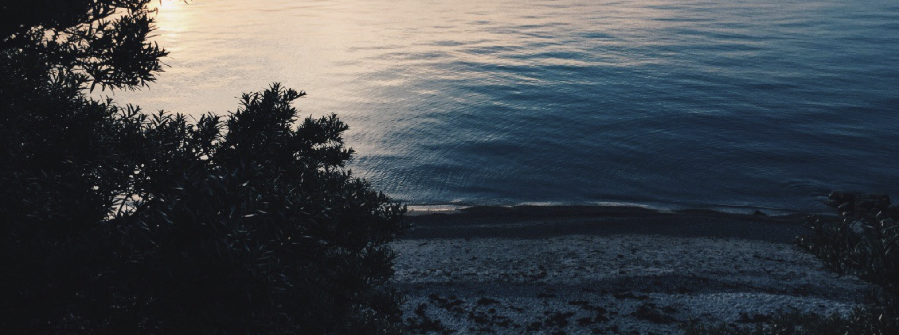
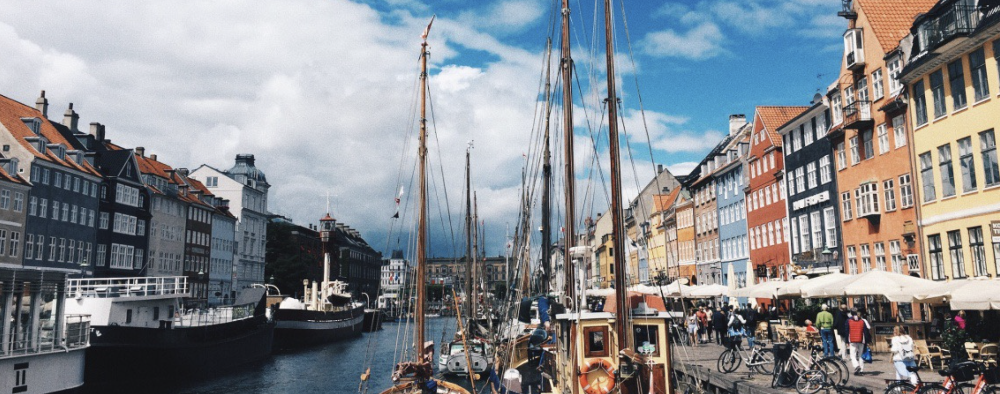

About Copenhagen
This is where I come from, Dec 3, 2018
Copenhagen, Denmark's capital, sits on the coastal islands of Zealand and Amager. It's linked to Malmo in southern Sweden by the Oresund Bridge. Indre By, the city's historic center, contains Frederiksstaden, an 18th-century rococo district, home to the royal family's Amalienborg Palace. Nearby is Christiansborg Palace and the Renaissance-era Rosenborg Castle, surrounded by gardens and home to the crown jewels.

Where I Spend My Summers
Tisvilde, Dec 3, 2018

Tisvilde, Denmark
Tisvilde is a small town with a population of 1,537 located on the north coast of the island Zealand in Denmark 60 km in Gribskov Municipality, northeast of Hillerod. Tisvildeleje is the coastal part of Tisvilde. "Leje" roughly translates as 'plain' and used to be a fishermans village. Broad beaches, a holy spring, and rock music in the open air. Tisvilde on the Danish Riviera has something for everyone and plenty of everything: warm hospitality, beautiful scenery, great art and culture, and wonderful food. In short - everything on the wishlist for a good holiday.
As you stroll along the narrow main street past the thatched fishermen's cottages, you arrive literally at the water's edge. Here it becomes clear why Tisvildeleje is one of the most popular resorts on the Danish Riviera. Way back in the middle ages pilgrims travelled here to drink from the holy Saint Helene Spring (Sankt Helene Kilde) which provided water for King Christian IV. Later, famous artists and writers such as Asger Jorn and Johannes V. Jensen sought contemplation here.
Today it is especially the creative Copenhageners that enjoy Tisvildeleje's sanctuary from everyday life. Here you can kick-back, relax, and enjoy the carefree atmosphere.
Denmark's Hotspots
Beautiful unknown tourist areas in Denmark, Dec 3, 2018

1. Tivoli Gardens:
Tivoli Gardens in Copenhagen has been one of the most popular attractions in Denmark for a very long time. Second oldest amusement park in the world but still a fan favorite.
2. Bakken
oldest fairground in the world! Just north of Copenhagen you will find Dyrehavsbakken (Bakken) which is the world's oldest operating amusement park. With free entry this amusement park is also a very popular attraction in Denmark.
3. The original LEGOLAND:
Since it opened in 1968, the original LEGOLAND® has been wowing guests with a mixture of rides, special LEGO® exhibitions and the famous miniland. You can get here easily from the nearby Billund Airport and stay in the park, for a weekend of family fun in the home of LEGO®.
4. Copenhagen Zoo:
Combine a day out in the royal parks of Frederiksberg, Copenhagen, with a visit to Copenhagen Zoo. Located at the top of one of Copenhagen's tallest hills, you can also enjoy views of the city from the zoo's historical tower.
5. ARoS Aarhus Art Museum Aarhus:
distinctive modern art museum, ARoS, is a work of art in itself. Instagram yourself in the Your Rainbow Panorama rooftop installation, or explore the museum's many cultural exhibits throughout the year.
6. Djurs Sommerland:
Bring your entire family to Djurs Sommerland! Days of fun for all ages! Ready for speed, thrills and fun for all the family? One of the best attractions in Denmark for cooling off in the summer heat.
7. Louisiana Museum of Modern Art:
If you're into modern art and architecture, Louisiana Museum of Modern Art is an absolute must-see attraction in Denmark. Louisiana Museum of Modern Art is an old complex with a great view across the strait of Sweden from the gardens and café.
8. Lalandia Billund:
Treat your family to Scandinavia's biggest tropical holiday and activity center. Lalandia is in Billund, so you can fly to Billund Airport to get here, or drive for a few hours from Copenhagen to Jutland.
9. The Round Tower:
Copenhagen's iconic Round Tower is one of the oldest functioning observatories in Europe and a place where Hans Christian Andersen once wrote stories. Test your fear of heights at the Round Tower's glass platform! Read more Faarup sommerland
10. Faarup Sommerland Amusement Park:
Denmark's summerlands, or sommerlands, are a unique and traditional favorite with Danish families and Faarup Sommerland is one of Denmark's most visited.
Sightseeing in Copenhagen
Best Sightseeing experience! Dec 3, 2018

1. Little Mermaid:
The Little Mermaid is a bronze statue by Edvard Eriksen, depicting a mermaid. The sculpture is displayed on a rock by the waterside at the Langelinie promenade in Copenhagen, Denmark. It is 1.25 metres tall and weighs 175 kilograms.
Address: Langelinie, 2100 Kobenhavn, Denmark
2. Nyhavn:
Nyhavn is one of the most iconic places in Copenhagen and a perfect spot to hang out in the sun or go for a canal tour.
Address: Nyhavn Kobenhavn K, Denmark
3. Christiania:
Freetown Christiania in Copenhagen is an alternative society with creative houses, art galleries, music venues, restaurants, and beautiful scenery.
Address: Freetown Christiania, Kobenhavn, Denmark
4. Kongens Have:
Rosenborg Castle Gardens is the oldest and most visited park in central Copenhagen, Denmark. Established in the early 17th century as the private gardens of King Christian IV's Rosenborg Castle.
Address: Oster Voldgade 4A, 1350 Kobenhavn, Denmark
5. The Round Tower:
Copenhagen's iconic Round Tower is one of the oldest functioning observatories in Europe and a place where Hans Christian Andersen once wrote stories. Test your fear of heights at the Round Tower's glass platform! Read more Faarup sommerland
Address: Kobmagergade 52A, 1150 Kobenhavn, Denmark
Sommerhus is filled with Florals
You can smell the roses! Dec 3, 2018

My grandma loves to grow roses in her garden.
Here's an article on gardening in denmark:
National flower of Denmark Image of Marguerite DaisyThe government of Denmark declared Marguerite Daisy botanically known as Argyranthemum Frutescens as the National Flower of the Country. Marguerites produce large, single, daisy-like flowers most of the summer. But Red Clover and English holly(Forget-me-not) also serve as flower emblems to Denmark. Other native and Popular Flower of Denmark Together with the soil composition, also the climatic factors are rather variable within Denmark and have an influence on the distribution of plants. Generally the western parts of the country has Atlantic climate and the eastern parts Continental climate. The flowers grown in Denmark are, Common Yellow Azalea(Rhododendron Luteum), Agrostocrinum Scabrum, Lady Orchid, Conostylis Aculeate, Grevillea Pulchella, Tassle Flower, Red Helleborine and Danish Orchids. While the famous flowers used for gifting purposes among Danes are, Sunflowers, Lilies, Gerbera Daisies, Orchids, Gladiolas and Roses.